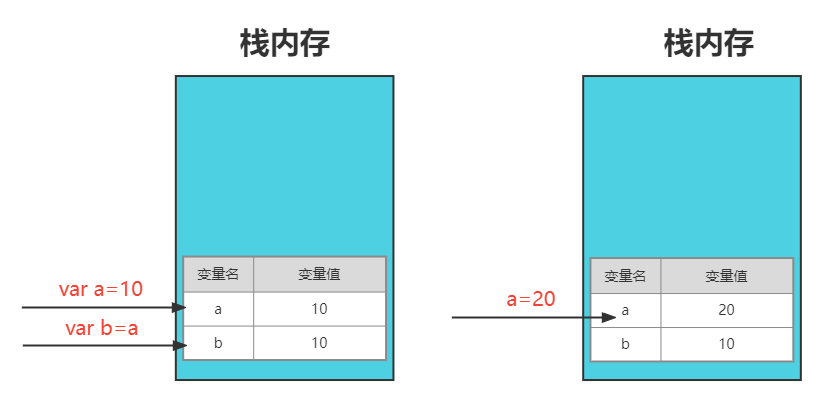
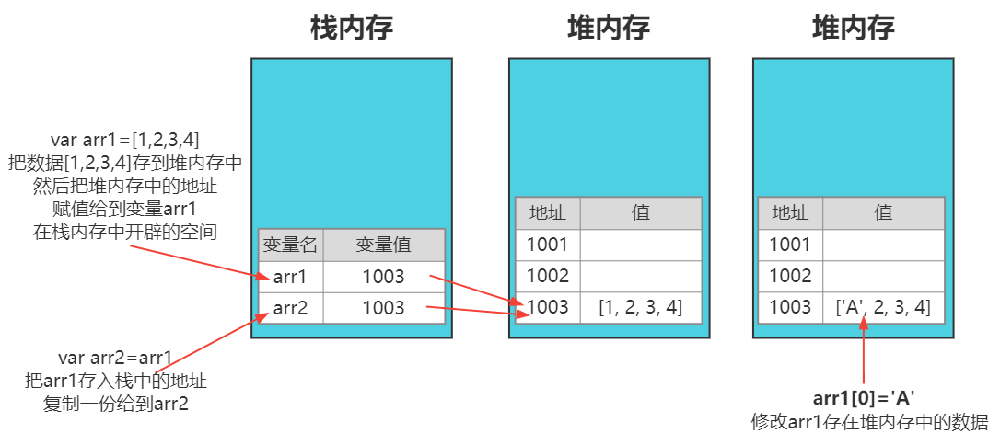
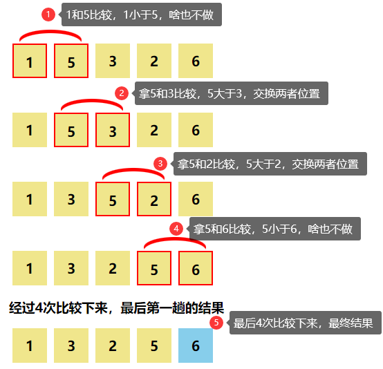
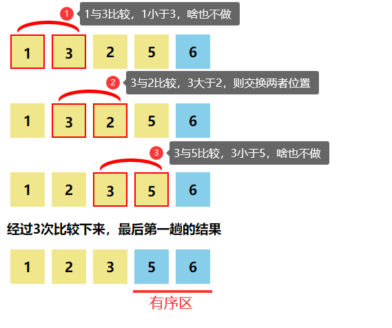
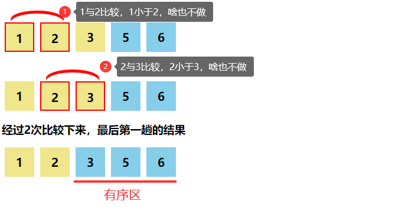
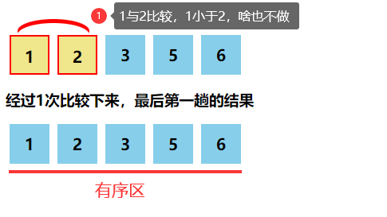
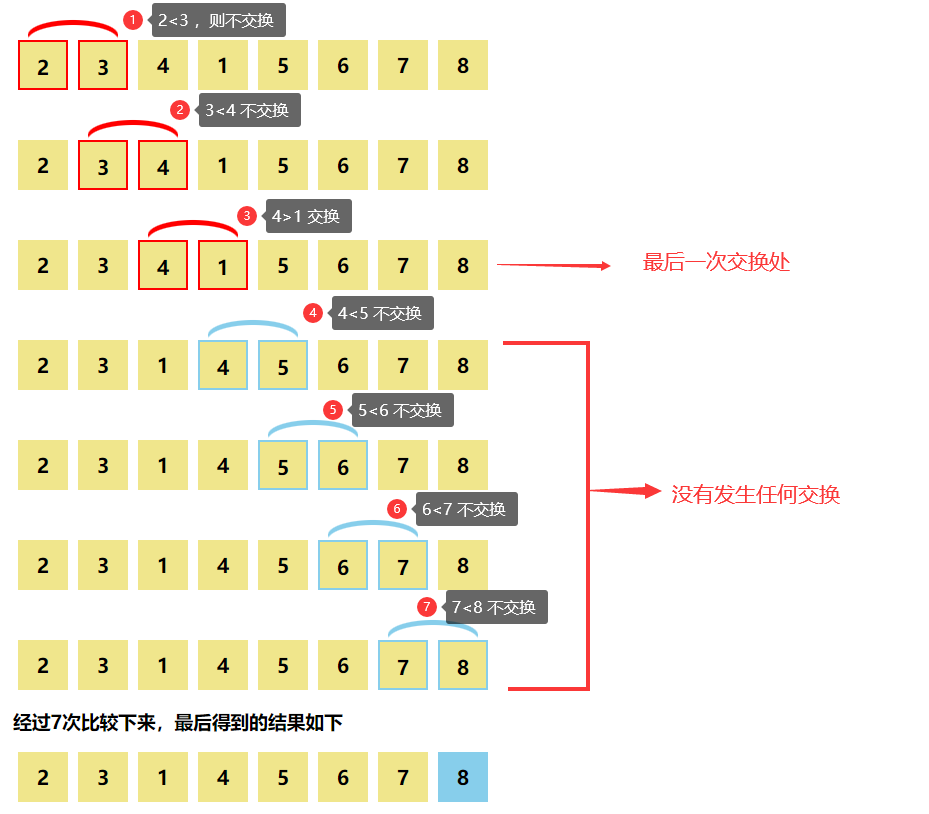
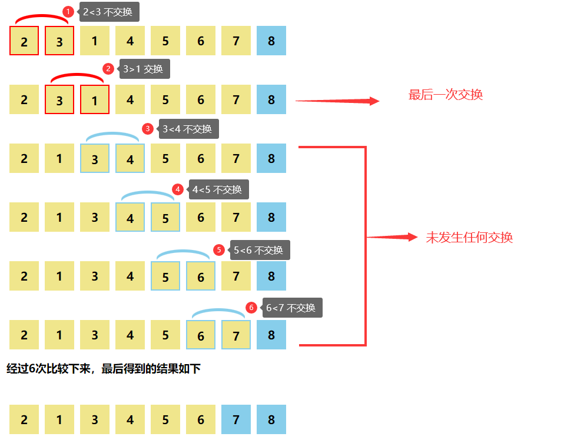

在数据类型那一章节，我们知道 JS 中数据类型分为：基本数据类型和引用数据类型
- 基本数据类型有 7 种：Number、String、Boolean、null、undefined、Bigint、Symbol
- 引用数据类型（Object 对象类型）有：Array、Function、Date、Math、RegExp 等对象
本章节我们要学习的数组 Array 对象就是引用数据类型，接下来我们会从以下三个部分来展开讲解- 数组的语法和基本用法
- 冒泡排序（基础版，中级版，最优版）
- 引用数据类型和基本数据类型
一、数组的语法和基本用法
- 编程过程中，我们经常会遇见处理 “一组数值” 的情况
- 按照之前的学习，我们只能定义 10 个变量来分别存储每个数值，但这样的方式显然是不合理的
- 因为我们是没法看出这些值之间有什么相互关系和作用
- 其次我们在定义和使用这些数据时也特别麻烦
- 所以我们需要有一种新的数据结构来存储这样一组具有相关性的数值，接下来要讲到的
Array 数组，就符合这一特点。
什么是数组
- 数组（Array），简单理解为是指一组数据的集合，用来存储一组相关的数据；
- 数据可以是任意的数据类型；
- 每种高级编程语言中都有数组，它是非常重要的一种数据结构。
创建数组
在
ES5标准下，创建数组有以下 2 种形式：
- 数组字面量方式创建数组 和 new Array() 方式创建数组
- 数组字面量方式创建数组
- 一个封闭在方括号对
[]中的包含有零个或多个数据 - 数组中的每个数据被称作元素，元素可以是任意的数据类型。
- 一个封闭在方括号对
// 使用数组字面量方式创建了一个空数组,arr是数组名
var arr = [];
>
// 使用数组字面量方式创一个带初始值的数组
// A，B，C，D 称为数组元素（项），数组的长度为4
var arr = ["A", "B", "C", "D"];
>
// 使用数组字面量方式创一个带初始值的数组，数组长度为6
// 数组元素(项)可以是任意数据类型
var arr = [1, "name", null, undefined, {}, function () {}]; // 一般不会这样用，仅当前了解
数据创建同时赋值，称为数组初始化
注意：
var arr=[1,2,3,,4];长度是5var arr=[1,2,3,4,];长度是4有空元素的数组，称为稀疏数组
new Array()方式创建数组- 在实际开发中，这种方式用的少，大家只要了解即可
- 建议大家掌握了数组字面量创建方式，再来了解这种方式
注意：
- 不支持
var arr=new Array(1,2,,3);的写法 var arr=new Array(1,2,);，长度是2
括号内只有一个数字时，创建的是数组长度
var arr = new Array(5);
console.log(arr.length); // 5
console.log(arr[0]); // undefined;
//创建一个数组，数组长度为5 ，每一项为空，打印出来为undefined
括号内是一个字符串时，是创建一个数组
var arr = new Array("5");
console.log(arr.length); // 1
console.log(arr[0]); // 5
// 创建一个数组，数组长度为1，同时赋初始值为‘5’
括号内为多个值时，创建的是数组
var arr = new Array("A", "B", "C");
console.log(arr.length); // 3
console.log(arr[0]); // A
// 创建一个数组，数组长度为3，同时赋初始值为 'A'、'B'、'C'```
#### 访问数组元素（项）
>- 数组的每一项都有索引（下标），索引是从 0 开始的正整数，从左至右，从0开始
>- 我们通过 数组名`[索引]`的方式来访问数组中元素，如下
var arr = [“A”, “B”, “C”, “D”];
// 通过索引来访问数组中元素
console.log(arr[0]); // A
console.log(arr[1]); // B
console.log(arr[2]); // C
console.log(arr[3]); // D
#### 数组的长度
>- 数组的 `length` 属性，表示它的长度
>- 用`.length`的方式访问数组长度
// 创建数组
var arr = [“A”, “B”, “C”, “D”];
// arr.lenght 访问数组长度
console.log(arr.length); // 4
>- 数组最后一项的下标= 数组长度- 1
#### 修改数组项的值
>**方式一：**
>- 如果修改项的索引在0 到数组长度 -1 内，**正常修改值**
var arr = [1, 2, 3, 4, 5];
// 更改第二项值，也就是下标为1的项的值
arr[1] = “A”;
console.log(arr); // [1, ‘A’, 3, 4, 5]
>**方式二：**
>- 如果修改项的索引不在0 到数组长度 -1 内，相当于**创建**这一项
>- 而且会**修改**数组的**长度**，同时在这个长度内**没有值的项都是空**，通过下标访问这些没有值的项时，结果是`undefined`;
var arr = [1, 2, 3, 4, 5];
var arr[9]=’B’;
console.log(arr);
// [1, ‘A’, 3, 4, 5, empty × 4, ‘B’]
console.log(arr.length); // 10 数据长度变为10
console.log(arr[5]); // undefined 下标为5的这一项，访问值为undefined
>**方式三：**
>- 先创建一个空数组，然后再赋值
>- 而且会根据索引修改数组长度，没有赋值的项都是空的，通过下标访问这些没有值的项时，结果是`undefined`;
var arr = [];
arr[0] = 1;
arr[2] = 2;
arr[5] = 5;
console.log(arr.length); // 6
console.log(arr); // [1, empty, 2, empty × 2, 5]
#### 访问数组注意事项
1. 访问数组中不存在的项，不会报错，回返回undefined
var arr = [“A”, “B”, “C”, “D”];
console.log(arr[5]); // undefined
2. 数组项对应的值为空时，在访问时，返回undefined
var arr = [“A”, , “B”, “C”];
console.log(arr[1]); // undefined
// 这两种情况，要注意区分
var arr = [“A”, undefined, “B”, “C”];
console.log(arr[1]); // undefined
3. 经典面试题：
>将数组的length设置为 0，取第一个元素会返回什么 ？
var arr = [1, 2, 3, 4, 5];
arr.length = 0;
console.log(arr);
//arr=[],数组值清空
console.log(arr[0]);
//undefined
#### 数组的遍历
>- 所谓数组遍历，就是把数组中的每一项都访问一遍。就好比篮子里有 10 个苹果，一个一个拿 出来。
>- 至于拿出来做什么，这就要看实际的需求了。比如可以拿出来放在桌子上，什么都不做，也可以拿出来一个一个洗一下。
>- 这里我们利用 `for` 循环，把数组中的**每一项**拿出来，在控制台打印输出。
> - for循环中的i是从 0 开始的，是计数器，当**索引**使用
> - `arr[i]`就是访问数组中下标为i的那一项
var arr = [“A”, “B”, “C”, , , , “G”, “H”, “I”, ,];
for (var i = 0; i < arr.length; i++) {
console.log(arr[i]);
}
// 输出：A B C undefined undefined undefined G H I undefined
#### 二维数组
>- 以**数组**作为**数组元素**的数组，即："数组的数组"
>- 二维数组，可以认为是数组中的元素也是一个数组
1. 创建二维数组
var arr = [
[2, 5, 8],
[11, 22, 33],
[55, 88, 66],
[23, 56, 89],
];
console.log(“数组的长度：” + arr.length); // 4
2. 访问数组的长度与值：
>- 外侧数组长度：`arr.length`
>- 内数组长度：`arr[i].length`,i是所访问数组的下标
>- 访问内侧数组的值：`arr[i][j]`
var arr = [
[2, 5, 8],
[11, 22, 33],
[55, 88, 66],
[23, 56, 89],
];
console.log(arr.length); //4
console.log(arr[1].length); //3
console.log(arr[2][1]); //88
3. 循环遍历二维数组中的每一项
var arr = [
[2, 5, 8],
[11, 22, 33],
[55, 88, 66],
[23, 56, 89],
];
// 循环输出二维数组中的每一个项
for (var i = 0; i < arr.length; i++) {
for (var j = 0; j < arr[i].length; j++) {
console.log(arr[i][j]);
}
}
// 最终输出结果 2 5 8 11 22 33 55 88 66 23 56 89
#### 数组类型的检测
1. 用`typeof`检测数组和对象，得到的是`object`
typeof [1, 2, 3]; // object
typeof { name: “清心老师”, age: 18 }; // object
2. 如果要区分数组和对象，我们可以用`Array.isArray()`来检测是否是**数组类型**
>- 如果Array.isArray()的返回值是true，就是数组类型，否则就不是
Array.isArray([1, 2, 3]); // true
Array.isArray({ name: “清心老师”, age: 18 }); // false
Array.isArray([]); // true
### 二、数组相关实践应用
1. 数组相关实践应用
>将数组[1, 43, 23, 8, 4, 6, 8, 22, 9]翻转过来
var arr = [1, 43, 23, 8, 4, 6, 8, 22, 9];
var arr1 = [];
for (var i = arr.length - 1; i >= 0; i–) {
arr1[arr1.length] = arr[i];
}
console.log(arr1);
>>思考：
>- 我们如何在不增加新数组的情况下，在原数组上对数组进行翻转 ？
2. 找出数组 [1, 43, 23, 8, 4, 6, 8, 22, 9] 中的最大值
>- 声明一个变量 `max`，用来保存数组中的最大值
>- 刚开始默认数组中的第一项为最大值，存入变量 max
>- 然后拿 max 与数组中**每一项**（除第一项）去做比较
>- 如果数组中值大于 max，就把这个数存到 max 变量中去，否则就继续往下比
var arr = [1, 43, 23, 8, 4, 6, 8, 22, 9];
var max = arr[0]; // max用来保存最大值，刚开始默认取数组中第一项为最大值
for (var i = 0; i < arr.length; i++) {
if (max < arr[i]) {
max = arr[i];
}
}
console.log(“数组中的最大值为:” + max);
3. 删除数组中指定元素
>要求删除数组[1, 4, 12, 6, 33, 15, 30, 5, 8];中的所有大于 10 的数
<img src="删除指定元素.png">
>**开启两层循环**
>- **外层**循环把数组中所有数遍历出来与 10 做比较，当判断当前项值`> 10` 时
>- 开启**内层**循环，用来**删除当前项**（从当前项开始，把后面的每一项，赋值给前一项，达到删除当前项效果）
>- 每次有删除项时，其数组的长度就会减 1，数组长度减 1，可以**把最后一项干掉**。
>- 删除当前项后，下次外层循环开始位置，又要从**当前删除项**的下标开始查找(删除后，该项后面的数就会往前移一位)
var arr = [1, 4, 12, 6, 33, 15, 30, 5, 8];
// 外层循环，把数组中每个数拿出来与10做比较
for (var i = 0; i < arr.length; i++) {
if (arr[i] > 10) {
// 把当前项后面的每一项，都赋值给前一项，达到删除当前项效果
for (var j = i; j < arr.length; j++) {
arr[j] = arr[j + 1];
}
// 删除一项后，数组的总长度就要减1，这样就把数组中最后一项给干掉了
arr.length = arr.length - 1;
// 保证删除项后，下次遍历从当前删除项的序号开始遍历
i–;
}
}
console.log(arr);
>>重点学习：
>> - 如何删除数组中元素
>> - 删除数组中元素后，对后续元素和数组带的影响
>> - 后面数组有提供相关删除数组中元素的方法，这里就是让大家学习这种思维方式。
4. 随机生成指定范围内的颜色
基础：
var arr = [“pink”, “khaki”, “skyblue”, “tomato”, “orange”, “orchid”];
var len = arr.length;
color = arr[(Math.random() * len) >> 0];
console.log(color);
>当我们在做烟花效果时，我们需要随机为 100 个小圆或正方形产生（指定范围内的）不同颜色。
```js
><style>
.ball {
width: 100px;
height: 100px;
border-radius: 50%;
}
></style>
><body>
><div class="ball" id="J_ball"></div>
><script>
// 获取id为ball的元素
var ball = document.getElementById("J_ball");
// 定义一组颜色，存入到数组中
var bgColor = ["pink", "khaki", "skyblue", "tomato", "orange", "orchid"];
// 数组长度
var len = bgColor.length;
// Math.random() * (len) 产生 0- len-1之间的随机数
// Math.random() * (len) >> 0 去掉小数，只留下整数部分
ball.style.backgroundColor = bgColor[(Math.random() * len) >> 0];
> </script>
></body>
三、引用数据类型和基本数据类型的区别
我们知道在 JS 中数据分为：基本数据类型 和 引用数据类型两大类
- 基本类型：number、boolean、string、undefined、null
- 引用类型：array、object、function、regexp（正则表达式） …
那这两类数据类型在内存中是如何存储的呢 ？这就是我们接下来要讨论的重点。
先来看下面两段代码：
// 代码片段一
var a = 10;
var b = a;
a = 20;
console.log(a); // 20
console.log(b); // 10
// 代码片段二
var arr1 = [1, 2, 3, 4];
var arr2 = arr1;
arr1[0] = "A";
console.log(arr1[0]); // A
console.log(arr2[0]); // A
以上代码解读
- 通过代码片段一，我们发现，当 b=a，赋值完成后，后续对 a 的操作并不会对 b 产生影响。
- 而代码代码片段二中的数组就不一样，当 arr2=arr1 且，我们对 arr1 的操作，直接影响了 arr2，为什么会出现这个情况呢？
- 这就涉及到 Javascript 的基础数据类型和引用数据类型在内存中是如何存储的。
- 基本数据类型在内存中的存储
- 基本数据类型存储在栈空间中
基本数据类型赋值过程
- 变量a 是基本数据类型, 当代执行到
var a = 10时，在栈内存中开辟一块空间，把值10存入进去- 当执行到
var b = a时，把 a 的值 10,复制一份保存在 b 对应的内存空间中- 当执行
a = 20时，其本质是修改了a对应内存中的值，并不会影响到 b
- 引用数据类型在内存中的存储
- 栈内存中存着引用数据类型的地址，堆内存中存着引用数据类型的最终数据内容。
引用数据类型赋值的整个过程：
- 变量
arr1声明后，首先会在栈内存开辟一块内存空间，然后在赋值时，再在堆内存中开辟一块空间，堆内存存放引用数据类型的数据，然后在堆中就会有一个存放数据的地址，把这个地址存入变量对应的栈内存中。- 栈内存中存着指向堆内存中数据的地址。
- 当代码执行到
arr2=arr1时，这里是把arr1存入栈中的地址复制给了arr2，所以本质上arr1和arr2指向的是堆内存中的同一个值（数据）- 所以当我们操作
arr1[0]='A'时，arr2[0]的值也是’A’
结论：
- 当我们把一个引用数据类型当做值来赋值时，是把它存在栈中的地址复制一份来赋值。
- 当我们访问引用数据类型时，是通过栈中的引用地址来访问到堆中的数据。
栈和堆的的介绍
- 到这里，你肯定会有一个疑问，为什么一定要分堆和 栈这两个存储空间呢？所有的数据都存放在栈中不就可以了吗？答案是不可以
- 因为 Javascript 引擎需要用栈来维护程序执行期间上下文的状态，如果栈空间太大的话，所有数据都存放在栈空间里面，那么会影响到上下文切换的效率，进而又影响到整个程序的执行效率。
比较 栈 堆 大小固定 创建时，确定大小（值大小固定），故可能会溢出 大小不固定，可随时增加 存储类型 存储基本数据类型及引用类型数据的堆地址 存储引用类型数据 如何访问 按值(by value)访问 按引用(by reference)（堆内存地址）访问 特点 空间小，运行效率高 空间大，运行效率相对较低 存放规则 按顺序存放，先进后出 无序存储，可根据引用（地址）直接获取
总结：基本数据类型和引用数据类型的区别
比较 基本数据类型 引用数据类型 数据存放位置 基本数据类型存放在栈中，数据大小确定，内存空间大小可以分配 引用数据类型存放在堆中，每个空间大小不一样，要根据情况进行特定的配置 变量存储内容 变量中存储的是值本身 变量存储的是地址 变量用来赋值时 把变量的值复制一份去赋值 把变量的内存地址复制一份去赋值 存储内容大小 存储值较小 存储值较大 数组的深克隆(拷贝)和浅克隆(拷贝)
- 引用类型在赋值的过程中，指向的是同一个地址，所以本质上两个变量指向的是同一个东西。
- 那我们如何把一个引用类型（这里以数组为例），完全拷贝一份给到另一个变量，并且两者之间是完全独立的，没有任何的关联呢？
- 这就涉及到我们这里说的克隆问题。
- 浅克隆： 只克隆了数组的第一层，如果数组是多维数组，或数组中的项是其它的引用类型值，则不克隆其他层。
- 深克隆：克隆数组的所有层，要使用递归技术，在讲到递归的时候再介绍。
var arr = [1, 2, 3, ["a", "b", "c"]];
var arr2 = [];
for (var i = 0; i < arr.length; i++) {
arr2[arr2.length] = arr[i];
}
console.log(arr, arr2);
// arr[3] = "更改";
// console.log(arr, arr2);
arr[3][0] = 1;
console.log(arr, arr2);
- 更改arr的第一层值，不会影响arr2
- 但若是更改arr[3]这个引用数据类型里面的值(第二层)，就会同时影响arr2的值
- 因为第二层的是引用数据类型，存放的是地址
- arr[3]和arr2[3]指向的是同一地址
关于深拷贝，讲完递归之后再来讲
四、冒泡排序 - 著名排序算法
- 冒泡排序的英文是bubble sort 的是一个著名的排序算法，也是在面试时，非常爱考察的算法
- 假设，我们现在要将这个无序数组[1,5,3,2,6]从小到大来排列
按冒泡排序的思想：- 我们要把相邻的元素两两比较，当一个元素大于右侧相邻元素时，交换它们的位置；当一个元素小于或等于右侧相邻元素时，位置不变（啥也不做）
基础版：
- 冒泡排序整个过程
第一轮：交换过程

第二轮：交换过程

第三轮：交换过程

第四轮：交换过程

我们来分析下面的过程
我们来用表格来分析上面的执行过程，上面数组中有
5个元素，数组长度为5，经过了4轮交换。具体如下：
轮数 对比次数 确认元素个数 有序区个数 第1轮 4 1 1 第2轮 3 1 2 第3轮 2 1 3 第4轮 1 1 5
其实我们可以得出结论：
- 元素交换轮数=数组长度-1
- 每一轮交换次数=数组长度-当前交换轮
代码实现思路
- 我们可以用
for循环嵌套来实现，外部循环控制交换轮数- 内部循环用来实现每一轮的交换处理。先进行元素比较，如果元素大于右侧相邻相元素，则两元素位置交换，如果不大于，则啥也不做
- 声明变量tmp用作交换变量
// 排序数组
var arr = [1, 5, 3, 2, 6];
// 数组长度
var len = arr.length;
// 外层for控制交换轮数
for (var i = 0; i < len - 1; i++) {
// 内层for控制每一轮，元素交换次数处理
for (var j = 0; j < len - i - 1; j++) {
if (arr[j] > arr[j + 1]) {
// 交换两元素位置
var tmp; // 用来交换两个变量的中间变量
tmp = arr[j];
arr[j] = arr[j + 1];
arr[j + 1] = tmp;
}
}
}
console.log(arr); // [1, 2, 3, 5, 6]
冒泡排序优化 1
在每一轮开始时，默认打上 isSorted=’有序’ 标记，数据一旦发生交换，就打上 isSorted=’无序’，退出整个
for循环的执行。
- 优化思路
- 让我们来回顾下刚才上面那个冒泡排序的细节，当我们第过第二轮排序后。
- 其实这个时候整个数组中的元素已经是有序的了，可是排序算法还是按部就班的执行第三，四轮的排序。
- 如果在第二轮完成后，我们就能判断出数列已经有序的，并做出标记，那么剩下的几轮排序就不必执行了，可以提前结束工作。这样是不是性能更高呢？
- 那如何判断出数列当前已经是有序的呢 ？
- 在第二轮结束后，数列才是有序的了，所以第二轮中我们是找不到数组有序的标记
- 看第三轮：
在第三轮中
- 整个过程都没有发生数据交换，也就是说，如果在这一轮中，数据如果没有经过任何的交换，那就说明，在这一轮当中，数据已经是有序的了。
- 所以我们在每一轮开始时，默认打上
isSorted='有序'标记，如果在这一轮交换中，数据一旦发生交换，就打上isSorted='无序'，如果整轮交换中，都没有发生交换，那就表示数组是有序的了。我们就可以退出整个 for 循环的执行。
// 排序数组
var arr = [1, 2, 3, 5, 6];
// 数组长度
var len = arr.length;
// 外层for控制交换轮数
var isSorted;
for (var i = 0; i < len - 1; i++) {
// 内层for控制每一轮，元素交换次数处理
isSorted = true; // 有序标记，每轮开始默认为有序，如果一旦发生交换，就会变成flag=false,无序
for (var j = 0; j < len - i - 1; j++) {
if (arr[j] > arr[j + 1]) {
// 交换两元素位置
var tmp; // 用来交换两个变量的中间变量
tmp = arr[j];
arr[j] = arr[j + 1];
arr[j + 1] = tmp;
isSorted = false;
}
}
// 这一轮多次交换下来，flag没有变为false,说明没有发生元素交换，此时数组已是有序的
if (isSorted) {
break; // 退出最外层for循环
}
}
console.log(arr); // [1, 2, 3, 5, 6]
进一步优化：冒泡排序优化 2
记录每一轮最后一次交换元素的位置，该位置为无序列表的边界
优化思路
- 为了让大家更好的理解最优的解决方案带来的好处，我们重新拿一个数组
[2,3,4,1,5,6,7,8]来做为案例讲解。 - 我们先来观察上面的数列，这个数列有一个明显的特点，就是前半部分
2,3,4,1是无序的，后半部分5,6,7,8是有序的,并且后半部分是升序排列的，其最小值也比前面部分的最大值要大。
- 为了让大家更好的理解最优的解决方案带来的好处，我们重新拿一个数组
交换过程
- 第一轮
- 第二轮
- 从上面的两轮交换中，大家有没有发现什么问题呢 ？
- 其实右边的许多元素已经是有序的了，但是每一轮还是规规矩矩的把所有数都比一轮，浪费了很多时间。
- 按正常的(系统的)冒泡排序逻辑，第一轮排序过后，有序区长度为 1，第二轮排序过后，有序区长度为 2，…..
- 但在实际的排序过程中，有序区的长度可能会大于系统的有序区长度。
- 比如说，第一轮后，有序区的长度为 5，1 之后就是有序区了，但在计算机看来，有序区的长度是1
- 有没有什么办法可以确定，有序区的长度呢 ？每一轮比较时，比较到实际有序区的前一位就不再发生比较了呢 ？
- 我们可以记录每一轮最后一次交换元素的位置，该位置为无序列表的边界，再往右就是有序区了
- 每一轮比较，比较到上一轮元素最后一次交换的位置就不再比较了。
// 排序数组
var arr = [98, 2, 3, 45, 4, 1, 5, 78, 6, 7, 8, 20];
// 数组长度
var len = arr.length;
// 当前是否是有序的
var isSorted;
// 有序的边界
var sortBorder = len - 1;
// 记录每一轮最后一次交换的值，确定下一次循有序边界
var index;
>
// 外层for控制交换轮数
for (var i = 0; i < len - 1; i++) {
// 内层for控制每一轮，元素交换次数处理
isSorted = true; // 有序标记，每轮开始默认为有序，如果一旦发生交换，就会变成flag=false,无序
for (var j = 0; j < sortBorder; j++) {
if (arr[j] > arr[j + 1]) {
// 交换两元素位置
var tmp; // 用来交换两个变量的中间变量
tmp = arr[j];
arr[j] = arr[j + 1];
arr[j + 1] = tmp;
isSorted = false;
// 把无序列表的边界，更新为最后一次交换元素的位置
index = j;
}
}
// 如果无序，记录上一次最后一次交换的元素下标
if (!isSorted) {
sortBorder = index;
}
// 这一轮多次交换下来，flag没有变为false,说明没有发生元素交换，此时数组已是有序的
if (isSorted) {
break; // 退出最外层for循环
}
}
console.log(arr);
五、编码题
题目如下：
- 当用户进入页面时，不停的弹出输入框让用户输入班级学员的成绩，直到输出退出后，就不再弹出输入框，而是把全班同学的平均成绩以弹窗形式显示出来。
var item; // 接收每次输入的值
var arr = []; // 把接收过的成绩，保存到数组中
var sum = 0; //累加器
while (item != "退出") {
item = prompt("请输入学员成绩");
arr[arr.length] = item;
}
// 把数组长度-1,目的是为了去掉最后一次存入数组中的'退出'
arr.length = arr.length - 1;
//计算总和
for (var i = 0; i < arr.length; i++) {
sum = sum + Number(arr[i]);
}
// 计算平均数
alert(sum / arr.length);
注意：
- 判断适合使用哪一个循环语句，只知道结果用
while- 数组长度一定要
-1